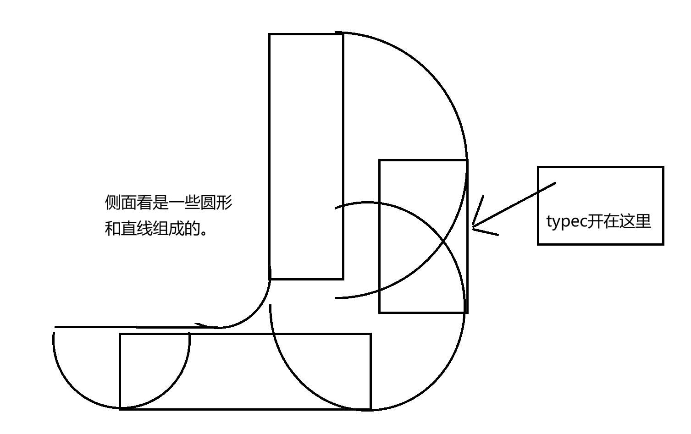
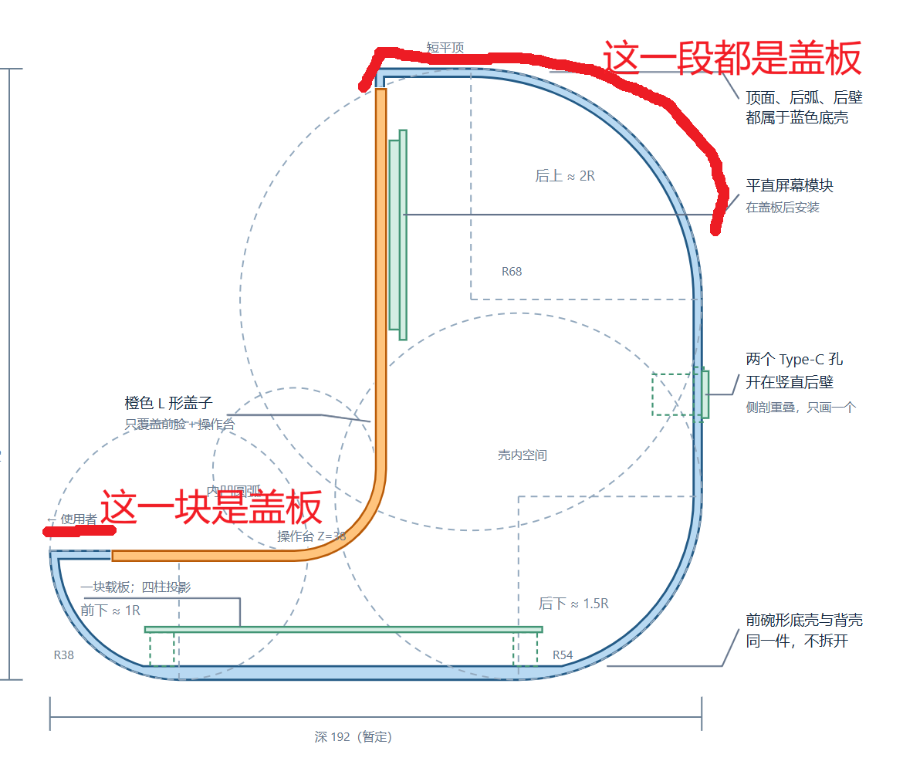
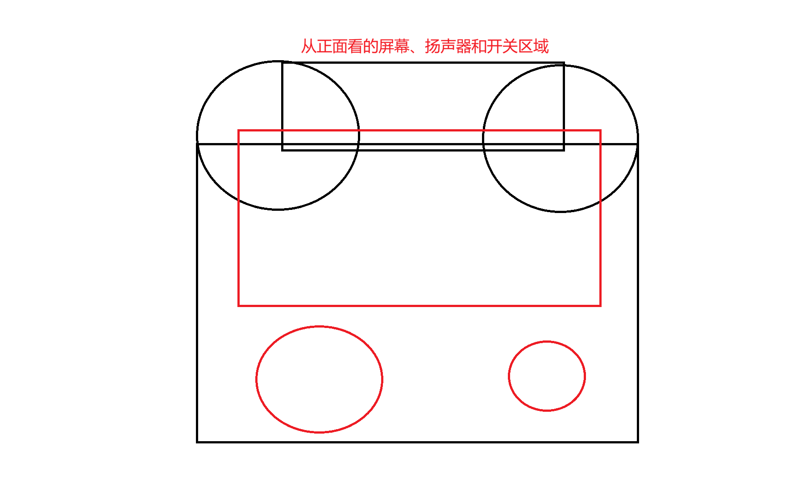
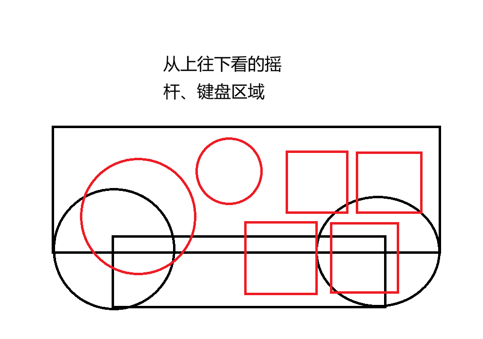
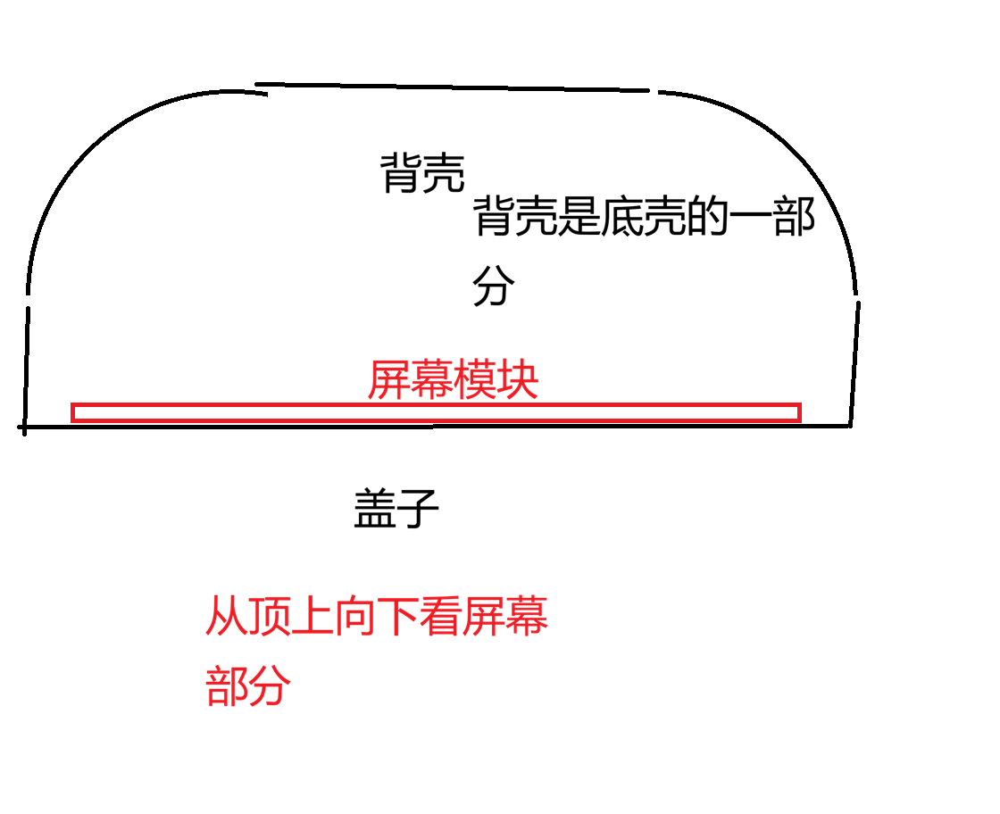
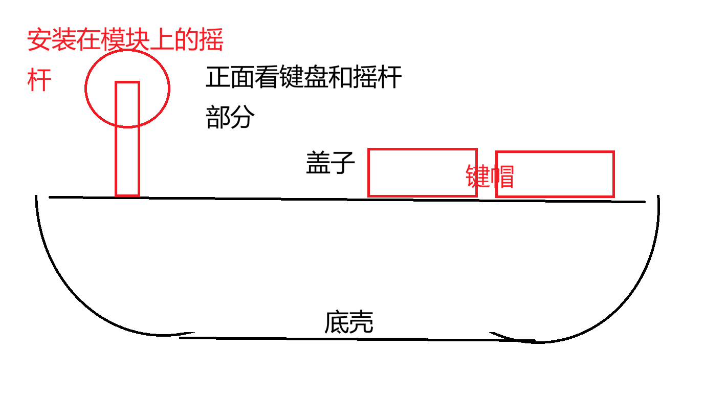

A–A正中纵剖：已剖去朝向观察者的侧板
左为使用者，右为背面；剖面暂取 X=60。这不是正常侧视外观，完整侧板请看 G 图。 安装柱用虚线投影。前端小段、短平顶和后上圆弧都是盖板；后直壁属于底壳。
对照你的侧面构造图：平顶/前脸直角；前下、后下、后上分别为圆弧

对照你的红线修正：前沿＋顶面＋后上圆弧都属于盖板

圆弧大小的理解：前下方较小 → 后下方较大 → 后上方最大。
下面标注的 R38 / R54 / R68 只是可调整的初始值，不把手绘的 1R / 1.5R / 2R 当作精确约束。
顶部中间、竖直前脸、操作台和后壁指定直段保留为直线。
B正视：竖直屏幕、扬声器和开关区域
橙色盖板自身的上方两角大圆转，没有蓝色上翻框包围它；屏幕窗口保持直角矩形。绿色虚线是背面的安装柱投影。
对照你的正视图：仅外轮廓上方两角圆；屏幕窗四角直

屏幕只留左上、左下、右下三个柱子；每个柱下都有支撑。
右上无柱，给排针和插头让位。扬声器四柱在盖板后，M2.5 螺丝穿过喇叭原有 Ø3 孔。
C操作台俯视：圆孔与四个独立方孔
俯视看到的圆角边缘属于橙色盖板，底壳在它下面，不形成上翻包边。下排四键按 PCB 错位，不合成一个大窗口。
对照你的操作台俯视图：靠用户的两角圆，靠屏幕一侧保持直线/直角

摇杆圆孔、麦克风声孔、四个独立方孔。麦克风的虚线大圆是盖板下面的模块包络，
实线小圆才是声孔；模块不能穿出盖板。图中不设计键帽、摇杆杆球或延长件。
D–D穿过屏幕的水平剖面，从上向下观察
剖切位置在 A 图用紫色虚线标出，暂取 Z=108：穿过屏幕下部，低于后上弧收口 Z=112。 去掉剖面以上材料后，才看见屏幕截面及蓝色后直壁；不是普通俯视外观。
对照你的屏幕俯剖：后方两角圆，前盖与两侧交接处直角；背壳属于底壳

这是剖开以后看到的内部。 D–D 切到屏幕、前面盖板以及底壳的侧壁/后直壁。
它上方还有同一盖板的顶面与后上弧，已随剖面以上材料去掉。正常俯视请看 F 图。
E内部高度关系：包住模块，不制作外露配件
不同器件的高度并排示意，不是强行放在同一个实际剖面上。裸器件尺寸与完整插装高度分开。
对照你的操作区横剖：碗形底壳向下圆转，盖面平直，外露件不在本次设计范围

高度还不能当成已确认的实物配合。
排母 8.5±0.2 mm 已查到；圆形麦克风模块的公针塑座、PCB 与插入间隙没有精确资料。
“排母顶以上最多 8 mm”是当前预留上限，不是实测值。
键帽/操纵件应外露，但其安装后高度须由用户现有配件确认；本图不假定已经存在延长杆。
F正常俯视外观：不剖切
与 D–D 区分：完整装配后从上方看，只看到橙色盖板及操作台开孔，不展示蓝色内部背壳或整块屏幕正面。
屏幕安装面竖直，普通俯视只能对应到它的窄边/投影线，不能在顶面上再画一个横向显示窗口。
上部平顶、后上圆弧与下部操作台属于同一件曲面盖板。
G正常侧视外观：整块侧板属于底壳／背壳
没有剖切、没有拆侧板。侧面轮廓以内全部填蓝色，不显示内部模块。 橙色细虚线只提示上/前盖板在边缘的接合位置，不代表橙色侧盖。
左右侧板都是底壳的一部分，不能分给盖板。
A–A 之所以能看见橙色盖板厚度和内部，是因为朝向观察者的整块蓝色侧板已被剖去。
正常从侧面看，应当是这里这块完整的蓝色侧板。
逐张对照：哪里圆，哪里直
不是“把所有边加大倒圆”。同一个物体从不同方向看到的圆角位置必须分别满足下面的关系。
| 你的示意图 | 保留直线 / 直角 | 使用圆弧 / 圆角 | 对应图 |
|---|---|---|---|
| 侧面构造 | 操作台、竖直前脸、短平顶、后壁中段；前脸与平顶交点 | 前下弧、操作台内凹过渡、后下弧、后上弧 | A |
| 1R / 1.5R / 2R | 不把辅助圆的交线变成实体棱 | 前下较小，后下更大，后上最大；比例不是精确值 | A 构造线 |
| 盖板红线修正 | 前端小段、短平顶属于同一盖板 | 盖板连续包过后上弧；底壳不翻上来代替这一段 | A 橙色区域 |
| 操作台俯视 | 靠屏幕一边和两上角；四个键孔全部是直角矩形 | 靠用户一侧的两个外角；摇杆孔、麦克风声孔 | C |
| 屏幕区域正视 | 两侧、顶部中段、下沿；屏幕窗的四个角 | 外轮廓上方两角；扬声器圆形声区、开关圆孔 | B |
| 屏幕水平剖面 | 剖开后才看见平直屏幕、前盖及后直壁截面 | 该高度的后壳两角，中间保留直段；不是正常外观俯视 | D–D，剖切线见 A |
| 正常从上向下看 | 竖直屏幕不摊平到顶面 | 完整顶面和后上弧由盖板盖住，不暴露蓝色内部 | F |
| 正常从侧面看 | 左右完整侧板均属于底壳／背壳 | 侧面整块蓝色轮廓按构造圆弧收边；盖板只在边缘相接 | G，不是 A–A |
| 操作区横剖 | 盖面平直；没有内翻的宽托边 | 碗形底壳两侧向下圆转，下面留平直承载区 | E（高度示意） |
两件分工与安装要求
用于确认理解与分件，不是制造放行图；三维模型和导出文件尚未据此最终定稿。
底壳含后直壁；曲面盖板含顶面和后上弧，仍是两件
左右完整侧板都归底壳／背壳，不归盖板
没有独立后盖、屏幕支架板或模块托盘
盖板自己有圆角；底壳不翻上来围住它
圆弧与直线按三个视图分别构造
只用一块 KiCad 载板，四个安装孔柱
后侧直壁两个圆形 Type-C 母座孔
屏幕三柱，右上去掉，柱下有支撑
喇叭四个 M2.5 螺母柱，兼容原 Ø3 孔
四键位、摇杆与麦克风位置不改 PCB
盖子与底壳单边约 0.4 mm 装配间隙
收紧宽度：图稿外宽约 120 mm，由最宽屏幕 PCB 108.04 mm 决定，
不再为造型扩至 148 mm。扣除两侧各 2.4 mm 壳壁后，屏幕两侧平均各余 3.58 mm，
用于安装与配合；圆角不得侵入这个必要包络。
暂定机械基准：外包络 120 × 192 × 180 mm；操作台 Z=38； PCB 柱顶 Z=14、板厚 1.6；屏幕面 Y=96。位置变换为 X壳=XKiCad+7.75， Y壳=148−YKiCad。所有数值服务于形状与空间检查，仍可在确认后调整。
尚需闭环：完整插装麦克风高度、现有键帽/杆球的安装高度与活动范围、 喇叭横向孔距及耳厚；盖板四键之间的细筋也要在打印方案中处理。 不会据这份确认稿直接提交“可打印成品”或推送 main。
暂定机械基准：外包络 120 × 192 × 180 mm；操作台 Z=38； PCB 柱顶 Z=14、板厚 1.6；屏幕面 Y=96。位置变换为 X壳=XKiCad+7.75， Y壳=148−YKiCad。所有数值服务于形状与空间检查，仍可在确认后调整。
尚需闭环：完整插装麦克风高度、现有键帽/杆球的安装高度与活动范围、 喇叭横向孔距及耳厚；盖板四键之间的细筋也要在打印方案中处理。 不会据这份确认稿直接提交“可打印成品”或推送 main。